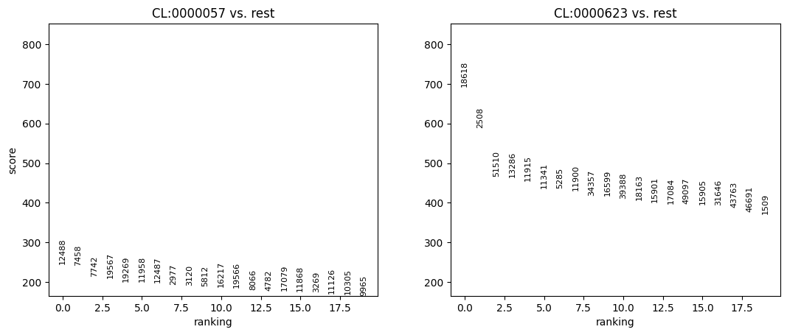

Census - demo ScanPy rank_gene_groups¶
Goal: demonstrate a simple student’s t-test between two medium-size (i.e., all of the extracted data fits into memory) “obs” metadata queries/slices, using scanpy.tl.rank_gene_groups.
NOTE: all examples in this notebook assume that sufficient memory exists on the host machine to store query results. There are other notebooks which provide examples for out-of-core processing.
[1]:
import cellxgene_census
import tiledbsoma as soma
As a first step, query and read a slice of data into an AnnData. In this example, lung cells (UBERON:0002048) labelled as fibroblast (CL:0000057) and natural killer cells (CL:0000623) are selected.
[2]:
with cellxgene_census.open_soma(census_version="latest") as census:
human = census["census_data"]["homo_sapiens"]
with human.axis_query(
"RNA",
obs_query=soma.AxisQuery(
value_filter="tissue_ontology_term_id == 'UBERON:0002048' and cell_type_ontology_term_id in ['CL:0000057', 'CL:0000623']"
),
) as query:
adata = query.to_anndata(
X_name="raw",
column_names={
"obs": [
"cell_type_ontology_term_id",
"tissue_ontology_term_id",
],
"var": None,
},
)
adata
[2]:
AnnData object with n_obs × n_vars = 216405 × 60664
obs: 'cell_type_ontology_term_id', 'tissue_ontology_term_id'
var: 'soma_joinid', 'feature_id', 'feature_name', 'feature_length'
With the data read into an AnnData, use the ScanPy API to compute the rank genes groups.
[3]:
import scanpy
# ScanPy `rank_genes_groups` assumes that the X data is logged.
scanpy.pp.log1p(adata.X, copy=False)
# do ranking
scanpy.tl.rank_genes_groups(adata, "cell_type_ontology_term_id", method="t-test")
# visualize ranking
scanpy.pl.rank_genes_groups(adata)
